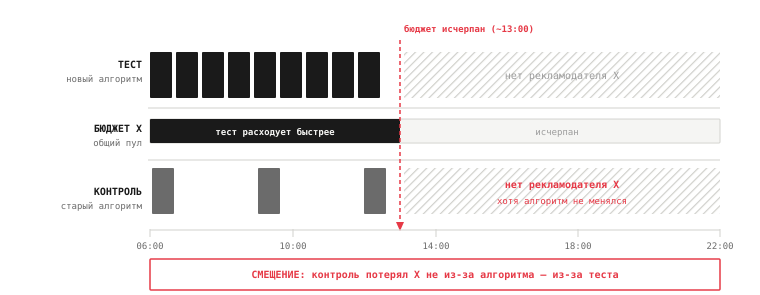

Почему A/B-тест ломается в рекламном аукционе (и что делать вместо)
Вы поменяли алгоритм выбора баннера. Не радикально — чуть иначе взвесили кандидатов в аукционе, чтобы баланс между выручкой и удержанием стал лучше. Запустили честный A/B: 50% пользователей на старом алгоритме, 50% на новом, рандомизация на уровне пользователя, всё по учебнику. Через две недели смотрите результат: тест-группа принесла на 6% больше выручки на пользователя, доверительный интервал не пересекает ноль, p-value крошечный. Раскатываете на 100%. И прирост испаряется.
Это не peeking, не подсмотренный раньше времени результат, не ошибка первого рода. Ваш A/B был некорректен с самого начала — не из-за того, что вы плохо его провели, а из-за того, что в рекламном аукционе нарушается предположение, на котором стоит вообще любой A/B-тест. И это не редкая патология, а нормальное состояние рекламных систем. Если вы тестируете рекламное ранжирование привычным способом, вы почти наверняка измеряете не то, что думаете.
Что молча предполагает каждый A/B-тест
У любого A/B-теста под капотом лежит предположение, которое настолько привычно, что мы его не проговариваем. Называется оно SUTVA — stable unit treatment value assumption. В переводе на человеческий: реакция одного пользователя зависит только от того, в какую группу попал он сам, и никак не зависит от того, в какие группы попали остальные.
В большинстве продуктовых тестов это выполняется само собой. Если я вижу синюю кнопку, а вы зелёную, моё поведение не зависит от цвета вашей кнопки. Группы живут в параллельных вселенных, не пересекаясь. Именно поэтому мы можем сравнить их напрямую: разница в метрике — это и есть эффект изменения. Мы настолько привыкли, что SUTVA выполняется, что перестаём её проверять — она стала невидимой частью ритуала «разбили на группы, посчитали разницу».
В рекламном аукционе SUTVA рушится. И привычка не проверять превращается в ловушку: инструмент, которому вы доверяете, тихо отдаёт смещённый ответ, а вы принимаете на его основе решение.
Главный механизм поломки: общий бюджет
Чтобы понять, где ломается независимость, нужно вспомнить, что аукцион выбирает не из абстрактных баннеров, а из объявлений реальных рекламодателей. А у каждого рекламодателя есть дневной бюджет — конечная сумма, которую он готов потратить за день. Когда бюджет исчерпан, рекламодатель выходит из аукциона до конца суток.
И вот здесь кроется проблема: пул рекламодателей общий для тест-группы и для контроля. Это один и тот же набор кампаний с одними и теми же бюджетами, просто их объявления показываются пользователям из обеих групп. Бюджет не разделён пополам между тестом и контролем — он один на всех.
Теперь представьте, что новый алгоритм в тест-группе чаще показывает объявления рекламодателя X, потому что счёл их более релевантными. Бюджет X тратится быстрее. К середине дня он исчерпан — и X выходит из аукциона целиком, для обеих групп. Контрольная группа, которая «ничего не меняла» и работала на старом алгоритме, во второй половине дня уже не видит рекламодателя X — не потому что так решил её алгоритм, а потому что тест-группа израсходовала общий бюджет.

Группы оказались связаны через общий ограниченный ресурс. Тест-группа буквально изменила условия, в которых работает контроль. И измеренная разница в выручке теперь содержит не только эффект нового алгоритма, но и эффект перетекания бюджета между группами. Вы хотели измерить «насколько новый алгоритм лучше», а измерили «насколько новый алгоритм лучше плюс на сколько он обокрал контроль». Это разные числа, и второе не равно первому даже приблизительно.
Ещё два канала, по которым течёт interference
Бюджет — самый наглядный, но не единственный путь, по которому группы влияют друг на друга.
Цены. В аукционе второй цены (second-price) рекламодатель платит не свою ставку, а ставку следующего за ним конкурента. Значит, цена за показ зависит от того, кто ещё участвует в аукционе и с какими ставками. Меняя в тест-группе состав и порядок участников, вы меняете конкурентную динамику — а через неё и цены, которые формируются в общих для платформы аукционах. Контроль видит сдвинутые цены, хотя сам их не двигал.
Общая модель предсказания. Сердце аукциона — модель, предсказывающая вероятность клика (pCTR), потому что место в выдаче определяется произведением ставки на эту вероятность. Если такая модель дообучается на потоке данных из обеих групп, то поведение пользователей тест-группы попадает в обучающую выборку и меняет предсказания, которые модель выдаёт для контроля. Тест протекает в контроль через веса общей модели — тихо и незаметно в метриках.
Все три канала — бюджет, цены, модель — ведут к одному выводу: тест и контроль не изолированы. А раз так, простая разница средних между группами смещена.
Почему это коварнее, чем кажется
У человека, который впервые слышит про эту проблему, обычно есть успокаивающая мысль: «ну ладно, есть какая-то погрешность от перетекания, но она же небольшая и направление понятно — заложу поправку и поеду дальше». Это не работает, и вот почему.
Interference не добавляет случайный шум, который усреднится. Оно систематически смещает оценку — то есть двигает её в одну сторону, создавая ложный сигнал. И самое неприятное: вы не можете предсказать, в какую сторону. Иногда тест выглядит лучше, чем он есть на самом деле, потому что украл бюджет и показы у контроля. Иногда — хуже, потому что, наоборот, контроль воспользовался освободившимся ресурсом. Знак ошибки зависит от того, как именно новый алгоритм перераспределяет общий ресурс, и заранее он непредсказуем.
Это означает, что нельзя «внести поправку на interference» постфактум — вы не знаете ни величины, ни даже направления искажения. Единственный надёжный путь — не корректировать смещение, а устранить саму interference дизайном эксперимента. То есть построить тест так, чтобы группы перестали делить общий ресурс.
Решение первое: switchback
Идея switchback проста: если проблема в том, что две группы одновременно делят общий бюджет, давайте уберём «одновременно». Не разделяем пользователей на две группы — разделяем по времени. Весь трафик целиком работает то на алгоритме A, то на алгоритме B, чередуя их интервалами: например, час на старом, час на новом, и так далее.
В каждый отдельный момент времени работает ровно один алгоритм на всём трафике. Двух групп, конкурирующих за общий бюджет, больше нет — а значит, нет и перетекания. Рекламодатель X в «часы A» расходует бюджет по старым правилам, в «часы B» — по новым, но он никогда не делится одновременно между двумя версиями. Interference через общий ресурс снята по построению.
Цена за это — усложнённый анализ. Соседние интервалы времени коррелированы (вечер не похож на утро, выходные на будни), поэтому нельзя обращаться с интервалами как с независимыми наблюдениями и гнать обычный t-test. Нужно учитывать временную структуру, аккуратно выбирать длину интервала (достаточную, чтобы эффект проявился, но не настолько большую, чтобы накопить мало точек), и балансировать переключения по времени суток. Switchback хорошо ложится на системы, где эффект изменения проявляется быстро и переключать алгоритм можно часто — рекламный аукцион как раз такой.
Решение второе: гео — и как выбирать между подходами
Если переключать по времени нельзя — например, эффект медленный и копится днями — остаётся разделить не время, а пространство. Гео-эксперимент рандомизирует по регионам: одни города или области работают на алгоритме A, другие на B. Расчёт в том, что рекламные рынки в значительной степени локальны — рекламодатели и их бюджеты часто привязаны к регионам, — поэтому перетекание между гео заметно слабее, чем между группами пользователей в одном пуле.
Плата здесь другая. Гео-единиц мало: не миллионы пользователей, а десятки регионов. Это резко снижает статистическую мощность — обычными методами на десятке точек значимый эффект не поймать. Поэтому гео-эксперименты обычно анализируют квазиэкспериментальными методами, рассчитанными на малое число единиц: synthetic control, geo-lift и подобные подходы, где контрольный «двойник» региона строится из комбинации других регионов.
Есть и третий, самый честный путь — двусторонняя рандомизация, когда вы разделяете на группы не только пользователей, но и рекламодателей, чтобы тест и контроль действительно не делили общий бюджет. Он корректнее всех, но и дороже всех: требует контроля над обеими сторонами рынка и сильно урезает доступный объём, поэтому реально применим в основном на крупных платформах с большим запасом трафика.
Выбор между ними — это не вопрос вкуса, а вопрос природы вашей системы. Можно часто и безболезненно переключать алгоритм — берите switchback. Переключать нельзя, но рынки разделимы по географии — гео. Не выходит ни то ни другое, а ставки высоки — двусторонняя рандомизация или честное признание, что прямой замер невозможен, и переход на прокси-метрики.
Что забрать с собой
Вся ловушка сводится к одному пропущенному вопросу. Прежде чем запускать A/B рекламной системы — и вообще любой системы, где есть общий ограниченный ресурс, — спросите себя явно: делят ли мои группы что-то общее? Общий бюджет, общий инвентарь, общую модель, общий пул контрагентов? Если да — SUTVA нарушена, и обычный A/B вернёт вам смещённую оценку, причём вы не будете знать даже знака смещения.
И второе: выбирайте дизайн эксперимента под тип interference, а не по привычке «разбили 50 на 50». Быстрый эффект и частые переключения — switchback. Разделимые рынки — гео. Большая платформа и высокие ставки — двусторонняя рандомизация.
Настоящий навык senior-аналитика в монетизации — не в том, чтобы безупречно посчитать A/B-тест. А в том, чтобы распознать, что в этой системе обычный A/B соврёт, ещё до того, как нажата кнопка «запустить».
Если тема интересна дальше: switchback-анализ, гео-эксперименты и synthetic control подробнее — в курсе квазиэкспериментов. Про ошибки на этапе планирования — в «Трёх ошибках в планировании A/B-теста».